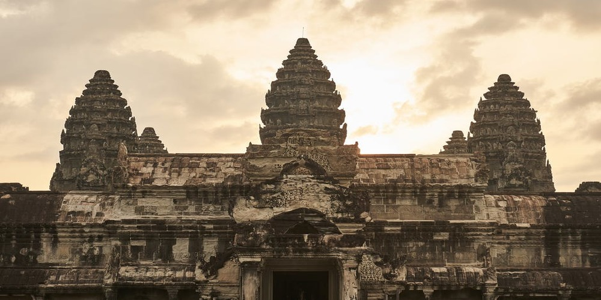
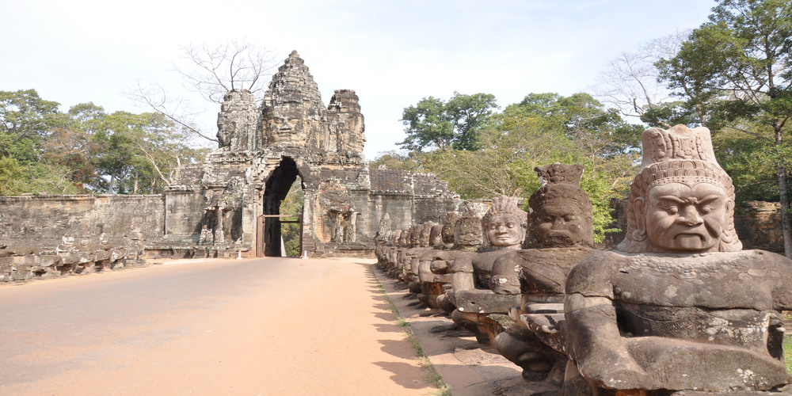
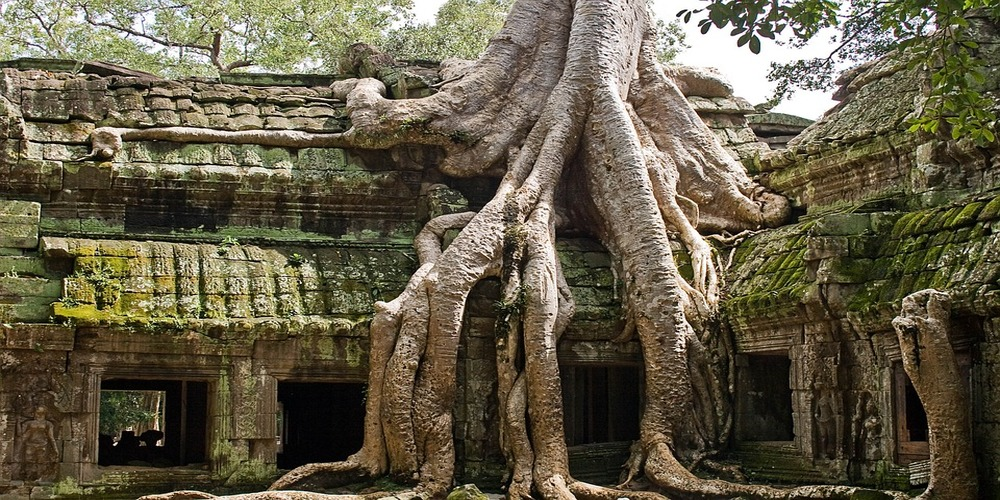
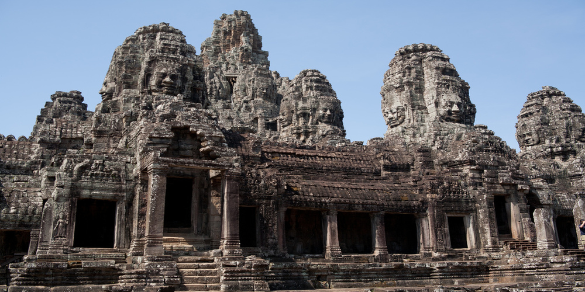

| 
Angkor Vat
|

Angkor Thom
|

Ta Prohm
|

Bayon
|
Date : XIIème siècle
Description : Le temple d’Angkor Vat (ប្រាសាទអង្គរវត្ត ) était initialement consacré au dieu Vishnu avant de devenir un temple bouddhiste.
Il a été construit à la demande du roi Suryavarman II de l’an 1113 jusqu’environ 1150. Angkor combine deux techniques architecturales khmer : temple-montagne et temple à galeries. Il contient 4 enceintes orientés à l’Ouest :
Matériaux : grès, latérite
Date : XIIème siècle
Description : Angkor Thom(អង្គរធំ) possède une muraille qui forme un carré de 3 km de côté enfermant un espace de 900 hectares, d’une hauteur avoisinant les 8 m construite en latérite et bordée à l’extérieur par une douve de 100 mètres de large. Cette muraille est interrompue par cinq portes monumentales (tours à visages) et bordée par une balustrade de statues de géants portant le corps de serpent.
Matériaux :grès (portes), latérite (enceinte)
Date : 1186
Description : Ta Prohm (khmer : ប្រាសាទតាព្រហ្ម, originellement appelé រាជវិហារ, Rājavihara) est un temple composé à cinq enceintes :
Matériaux : grès, latérite, brique (cellule)
Date : fin du XIIème siècle
Description : Bayon (ប្រាសាទបាយ័ន) est le dernier des “temple-montagnes” du site d’Angkor à 3 enceintes:
Matériaux : grès hétérogène, latérite
Date : seconde moitié du Xème siècle
Description : Ce temple se compose de trois enceintes
Matériaux : grès, latérite, brique
Date : Xème siècle
Description : Prè Rup ( ប្រាសាទប្រែរូប) est un temple à une disposition carrée avec 4 gopuras de plan cruciforme qui mènent vers la tour centrale
Matériaux : latérite, grès, brique
Date : XIIeme siècle
Description : Banteay Samré(ប្រាសាទបន្ទាយសំរែ) est un temple avec une tour centrale dans le style d’Angkor Vat. Il est entouré par deux murs concentriques regroupant deux enceintes intérieures, 4 gopuras, une salle et deux bibliothèques
Matériaux : latérite, grès
Date : XII siècle
Description : Banteay Kdei (ប្រាសាទបន្ទាយក្) est un temple qui comporte trois enceintes intérieures et une enceinte extérieure :
Matériaux : grès, latérite
Date : fin Xème siècle , début XIème siècle
Description :
Phiméanakas (ប្រាសាទភិមានអាកាស, “le temple céleste”) un ensemble clos dont le mur d’enceinte haut de 5 mètres est doublé d’un second mur ayant une date plus récente. A l’Est, on retrouve un vaste pavillon d’entrée et sur chacune de ses faces Nord et Sud deux pavillons d’entrée plus simple.
Au centre de cette enceinte se trouve le Phimeanakas, un temple-montagne à trois gradins, construit en latérite et très étroits, au sommet se trouve une galerie voûtée et une tour centrale en ruine construites toutes deux en grès
Matériaux : latérite, grès
Date : fin du XIIème siècle
Description : Ce temple est composé de trois enceintes:
Matériaux : grès, latérite
Date : fin du IXème siècle
Description : Ce monument est édifié au milieu du Baray de Lolei (Indratataka), avec une grande pièce d’eau. Le temple est connu pour ses éléments décoratifs (portes aveugles, devata et Dvarapala, le dieu du ciel Indra ou encore Vishnu). Lolei se compose de quatre tours de briques groupés sur une terrasse à deux niveaux en latérite, l’une d’elles s’est effondrée dans les années 1960.
Matériaux : latérite, grès
Date : fin du IXème, début du Xème siècle
Description : Phnom Bakheng (ប្រាសាទភ្នំបាខែង) un temple-montagne bâti au sommet d’une colline que gravissent des escaliers axiaux. La pyramide compte 5 gradins et possède à son sommet des tours en quinconce sur une terrasse commune. Il existe des petites tours sur les gradins de la pyramide, la base est entourée de briques. On retrouve également deux “bibliothèques” situés à l’Est Les quatre gopura axiaux et l’enceinte en latérite sont ruinées.
Matériaux : grès, briques, latérite
Date : XIIIème siècle
Description : La Terrasse des éléphants (ព្រះលានជល់ដំរី) est située devant le Palais Royal, allongée Nord-Sud avec à l’Est trois perrons majeurs et deux perrons secondaires. C’est une terrase d’apparat décorés de structures en bois aujourd’hui disparues. Son nom vient des éléphants en haut-reliefs très découpés décorant les escaliers secondaires. La face Est du mur de soutènement est décorée de représentations d’éléphants et de garuda.
Matériaux : latérite
Date : Pas de date connue
Description : Ta Keo (ប្រាសាទតាកែវ)est le premier temple construit uniquement en grès, avec 5 enceintes :
Matériaux : grès
Date : Xème siècle
Description : Prasat Kravan(ក្រវាន់) est composé de cinq tours en brique dédié à Vishnu dans la tour centrale.
Matériaux : latérite, brique
Date : XIIIème siècle
Description : La Terrasse du Roi Lépreux (ព្រះលានស្តេចគម្លង់) est situé au Nord de la Terrasse des éléphants et est constituée par un massif en maçonnerie d’environ 25 mètres de coté pour 6 mètres de haut. Ses faces sont entièrement sculptées de personnages répartis sur 7 registres représentant le panthéon hindouiste dont nāgas (serpent), garuḍaset(aigle) et kumbhandás.
Matériaux : grès
Date : XIIème siècle
Description : Thommanon (ប្រាសាទធម្មនន្) est un temple à une seule enceinte orienté vers l’Est. Le groupe central comprend une tour à faux étages et avant-corps reliée par un passage couvert à un pavillon allongé . L’enceinte en latérite est complètement détruite et est bordée à l’extérieur par une douve
Matériaux : latérite
Date : fin du IXème siècle
Description : Le temple est composé d’un pyramide à cinq gradins entourée de trois enceintes :
Matériaux : latérite
Date : seconde moitié du XIIème siècle
Description : Ce temple est un grand ensemble formant un rectangle de 700 mètre sur 800, il couvre une superficie de 56 hectares. On y trouve quelques similitudes avec Ta Prohm mais Prah Khan ne comporte que quatre enceintes :
Matériaux : grès, latérite
Date : XIIème siècle
Description : Banteay Kdei (ប្រាសាទបន្ទាយក្) est un temple qui comporte trois enceintes intérieures et une enceinte extérieure :
Matériaux : grès, latérite